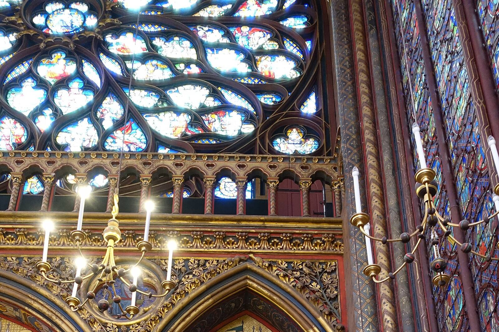
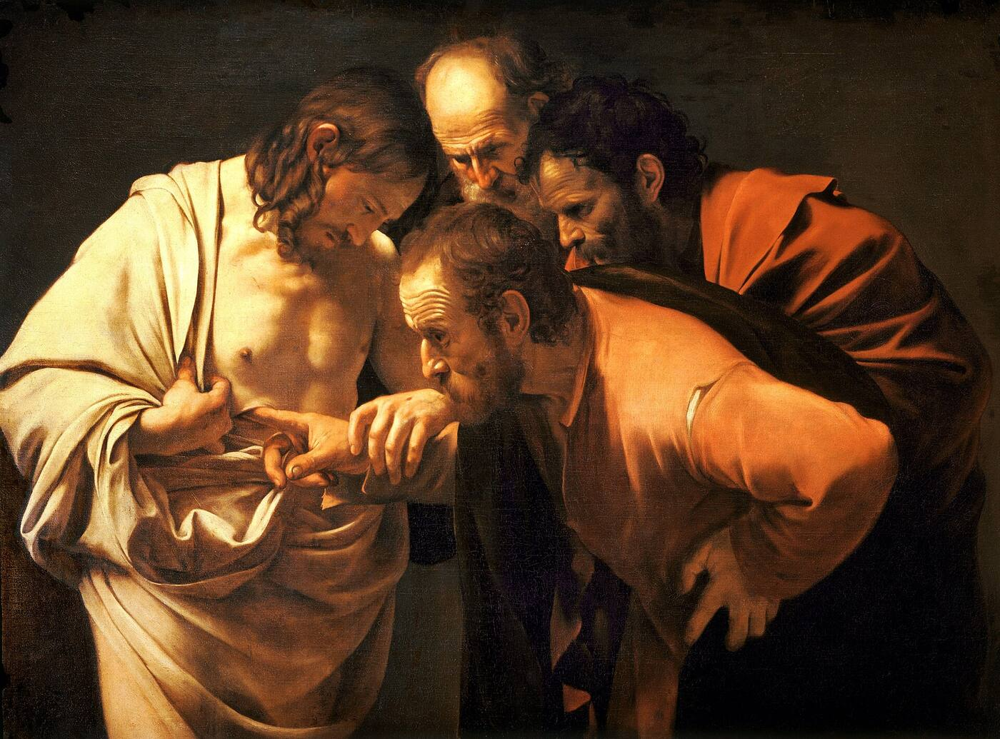

For the curious
Just curious? Good. Come in.
Sainte-Chapelle, Paris, Guilhem Vellut · CC BY 2.0
.jpg){kind=link}
You don't have to believe anything to pray with us. Leave the big questions open for now. Just come and see what it's like.
What does it mean to “leave the questions open”? →
Here is something to wonder about. Nearly every human culture we know of has prayed and sung to something beyond itself. People have chanted in caves, built temples on mountaintops, and sung to the night sky. Reaching for God seems to be part of being human. The Catholic Church's own Catechism notices the same thing: these ways of praying and worshiping are “so universal that one may well call man a religious being.”
Saint Augustine ran from faith for years before he found it. Afterward he wrote to God: “You have made us for yourself, and our heart is restless until it rests in you.”
Maybe you feel that restlessness. Maybe you don't. Either way, you are welcome here just as you are. No one will ask what you believe. There's nothing to join and nothing to sign. Visitors sit in the pews. Sing along, or simply listen.
I know your side of the door. When I was young, I was sure Christianity was for weak or naïve people. So I won't try to argue you into anything.
The monks sing very old words. People of every kind have prayed them: shepherds and kings, prisoners and exiles. They are full of joy and anger, fear and thanks. Every human feeling is in there somewhere.
An invitation
What if these words really are sacred? What if you could talk with God through them? No one can prove it to you. We invite you to try it.
When one of Jesus' first followers heard about him, he scoffed. His friend didn't argue. He just said, “Come and see” (John 1:46).

.jpg){kind=link}
A few quick questions will help us show you only what you need. Tap any answer. There are no wrong ones. Skip the questions
Have you ever read or heard a psalm?
Then you're in for something. There's a short explanation waiting for you below.
Good. You probably know more than you think. You might know “The LORD is my shepherd” without knowing it's a psalm.
Then you already know how strong they can be. Let's look at them a new way.
Have you ever been to a church service?
No problem at all. This is a simple one: mostly singing, a little reading, some silence. We'll tell you what to expect.
Then you'll find this simpler than most services: mostly psalms, sung back and forth.
Then here's what is different about monks: we pray at set times through the whole day.
Have you ever heard monks chant?
It's simpler than you might think, and very peaceful.
In person is different. You hear the breath, the stone, the silence between verses.
Then you know the feeling. Come and feel it again.
A few short explanations
Open any that help. The ones marked “For you” match your answers.
What is a psalm?
A psalm is a prayer-song. The Book of Psalms, in the middle of the Bible, holds 150 of them. They are poems, written to be sung. Some shout for joy. Some weep. Some are angry, some afraid, some full of thanks. Pope Benedict XVI said the Psalms hold “the whole range of sentiments that accompany human existence.”
They are something like the whole Bible in one book. Saint Athanasius, a bishop of the 300s, wrote that the Book of Psalms is “like a garden” holding things from every other part of Scripture, and that it “sets them to music.” In the Psalms you meet creation, the escape from Egypt, the kings, the exile: a whole people's story turned into prayer.
And because they are poetry, they can hold more than plain prose. A poem packs many meanings into a few words. You can come back to it for years and still find something new.
Why do monks pray at set times?
Several times a day, the monks stop whatever they're doing and go to church to pray together. This daily round of prayer is called the Divine Office or the Liturgy of the Hours. (“Office” here means a duty or service, not a room with a desk.) Each prayer time is called an “hour,” even though most take much less than an hour.
The idea is very old. One psalm says, “Seven times a day, I praise you” (Psalm 119:164). Saint Benedict, who wrote the rule our monastery lives by, built his monks' day around that verse.
Here, the main hours are Matins and Lauds (early-morning prayer and morning praise, prayed together), Sext (midday prayer), Vespers (evening prayer), and Compline (night prayer before sleep). See the times.
How the monks sing
The monks stand in choir, facing each other across the aisle. Two monks, called chanters, stand and give the starting note. Together they sing the first verse. Then the whole community answers with the next verse. Back and forth it goes, verse by verse, through the whole psalm.
Here's something to listen for: little by little, the pitch tends to sink. Then the chanters lift it again, clear and bright.
You don't need to know when to stand or sit. Do what feels natural, or follow the people around you.
What is chant?
Chant is sung prayer: the words carried on a simple melody, with no beat to keep and no show to perform. The melody serves the words. Our psalms are sung in English.
You don't need a good voice. You don't even need to sing. Just listen, and let the words wash over you.
What to expect when you come
- Come in quietly and sit in the pews.
- Please silence your phone.
- Sing along, or simply listen.
- Stay for one prayer time, or come back for many. No one will ask you to sign anything.
How do I find my place in the book?
You don't need a book at all to listen. But if you'd like to follow along, we've put together a step-by-step guide. How to follow along in our book →
Do you like poetry?
Then you know what a few good lines can do. The Psalms are some of the oldest poems still in daily use.
Fair enough. A lot of poetry is written to impress. The Psalms aren't. They're blunt, physical and honest, closer to the blues than to a poetry class.
Then here's a quick look. You've probably heard more of it than you know.
The oldest poems still being sung
People have always been fascinated by poets: Homer, Dante, Shakespeare, Whitman, the Beat poets reading in smoky cafés. A good poem says what plain words can't. It packs a lot into a few lines and gets under your skin.
The Psalms are poems like that, about three thousand years old. They don't rhyme. Instead, they say a thing twice, two different ways:
The Lord is my light and my help;
whom shall I fear?
The Lord is the stronghold of my life;
before whom shall I shrink?
C. S. Lewis pointed out that this is why the Psalms survive translation: the pattern lives in the thought, not in the sound of the words.
And they're muscular. God is a rock, a fortress, a shield. Enemies circle like bulls and dogs. The psalmist shouts, weeps, argues and dances. Nothing is polite. Walt Whitman's long, rolling lines grew out of the old King James Psalms, and Allen Ginsberg's Howl took that long breath from Whitman and the Bible.
Something about these old songs keeps pulling people back. Come hear them sung the way they were meant to be: out loud, by a choir, every day.
Pick up the phone
Imagine an old telephone in a museum, behind a velvet rope. Everyone walks past it. It's only there to look at. But what if you picked it up, and someone answered?
That's how I've come to pray the Psalms. In choir, the chanters sing one verse and the community answers with the next. So I try something simple: I hear one verse as my own voice, and the next as God answering me.
Two rules keep this honest. First, I never change the words of the psalm. Second, the answer I hear is my own meditation, a quiet back-and-forth that old spiritual writers called a colloquy. It isn't a new translation, and it isn't a claim about what the psalm's writer meant. The paired lines of Hebrew poetry simply invite me to listen for a reply.
You don't have to decide ahead of time whether anyone is on the other end of the line. Just pick up the phone and listen.
A short example
O Lord, hear my voice when I call;
have mercy and answer.
 I prayLord, are you there? Please answer me.
I prayLord, are you there? Please answer me.
Of you my heart has spoken:
“Seek his face.”
 I hear God sayI'm the one who put that longing in your heart. Come closer. Look for me.
I hear God sayI'm the one who put that longing in your heart. Come closer. Look for me.
It is your face, O Lord, that I seek;
 I prayThen I'm looking, Lord. Don't turn away from me. Let me see you.
I prayThen I'm looking, Lord. Don't turn away from me. Let me see you.
God has already made the first call. The only question left is how you will answer.
Every call is different. Some days it is sorrowful; other days it is full of joy. Here are a few more:
Come and pray with us
Come for one prayer time, and stay as long as you like. See the times.